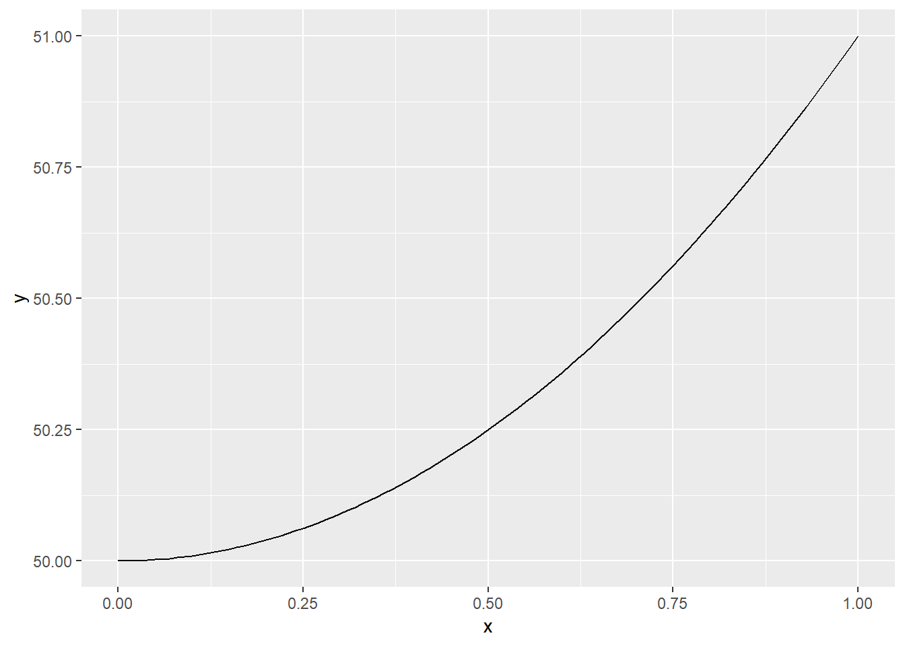

Download R from https://www.r-project.org/
Open the R program
Click ‘File’ -> ‘New Script’, and you are ready!
You now have two windows - one is the Editor window (the empty one) - this is where you will be writing code. The other window is the Console window. This is where the code you run will be shown together with the results of calculations.
General tips:
To run the code, type Ctrl + r on your keyboard - this will execute the code on the line where the marker is placed in the Editor window. You can run all code in a Editor window by typing Ctrl + a, and then Ctrl + r.
When you save your codes in the Editor window, click ‘File’ -> ‘Save as’. Remember to write ‘.r’ after the filename.
If you want to open a R file, you need to open it within the program (and not simply by clicking on it), using ‘File’ -> ‘Open script’.
Save often - R does not save by itself.
Try to type the following in the Editor window:
10+98## [1] 108 10 + 98## [1] 108 10+
98## [1] 108 sum(10,98)## [1] 108Now, run all the code by typing Ctrl + a, and then Ctrl + r. The results should appear in the Console window.
As you may notice, R does not care about spaces or line shifts.
Now your screen should look like this:
Further simple calculations can be written like this:
31-7 ## [1] 24 10*5## [1] 50 10/5## [1] 2 sqrt(9)## [1] 3 3^2## [1] 9 (5+3)*2## [1] 16
In R, it is possible to assign values to letters or word:
#Assign value (everything written after '#' will be ignoret and is useful for notes)
a<-2
b<-5
a+b## [1] 7
Or make a function:
#Funtions
MyFunction<-function(x){3*x+5}
MyOtherFunction<-function(z){z^2+50}
MyFunction(2)## [1] 11 MyOtherFunction(2)## [1] 54
When you want to make plots in R, the function plot() is simple and relatively easy to use. The plots will appear in a new window, a R Graph window.
plot(MyOtherFunction)
In addition to the functions build into R as default, you can install packages for your R program. First time you use a package, you need to install it with install.packages(). For using the package, you need to load the package everytime you open R with librarary(). If you are asked, about CRAN mirrors, you may just pick ‘0-Cloud [https]’.
install.packages("ggplot2") #Run only once
library(ggplot2)
ggplot(data.frame(x = c(0, 1)), aes(x = x)) +
stat_function(fun = MyOtherFunction)